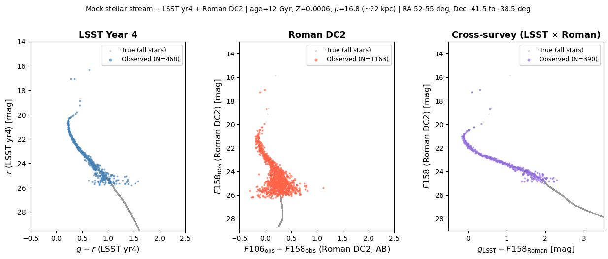

Multi-survey CMDs: LSST + Roman#
This notebook demonstrates the StreamInjector multi-survey workflow by injecting
a mock stellar stream into both LSST Year 4 and Roman DC2 surveys simultaneously.
The same physical stars carry photometry from both instruments, enabling cross-survey
colour-magnitude diagrams (CMDs).
Three CMDs are shown:
LSST yr4: (g − r) vs r
Roman DC2: (F106_obs − F158_obs) vs F158_obs — fully observed both bands
Cross-survey: (g_LSST − F158_Roman) vs F158
Each panel overlays true (noiseless) magnitudes in grey with observed (noise- and selection-function-convolved) magnitudes in colour.
Note
Roman survey used here. The Roman DC2 survey (roman_dc2) covers RA ≈ 51–56°,
Dec ≈ −38° to −42° — a small synthetic footprint derived from the Roman-Rubin DC2
simulation (Troxel et al. 2023). It carries three bands (F106, F129, F158) with full
selection-function products for both F106 and F158, enabling a fully-observed
two-band Roman CMD. The Roman HLWAS wide-area survey (roman_hlwas_wide) is
F158-only and cannot support a two-band Roman CMD; roman_dc2 is used here
specifically to illustrate the F106−F158 colour axis.
Note
Shared footprint. The stream stars are pre-placed in the DC2 region
(RA 52–55°, Dec −41.5° to −38.5°, centred at roughly RA 53.5°, Dec −40°).
Both surveys have valid magnitude-limit maps across this area (LSST yr4 covers
the full extragalactic sky; Roman DC2 is defined there). Pre-supplying ra/dec
avoids the great-circle-frame search, which is unreliable for a small footprint.
Setup#
import numpy as np
import pandas as pd
import matplotlib.pyplot as plt
import matplotlib.gridspec as gridspec
from streamobs.observed import StreamInjector
Build the multi-survey injector#
A single StreamInjector instance handles both LSST yr4 and Roman DC2.
The column namespace for each survey is {name}_{release}:
LSST Year 4 →
lsst_yr4Roman DC2 →
roman_dc2
injector = StreamInjector(
[
{"survey": "lsst", "release": "yr4"},
{"survey": "roman", "release": "dc2"},
],
verbose=False,
)
print("Surveys loaded:", list(injector.surveys.keys()))
print("Primary survey:", injector.primary_namespace)
/astro/store/shire/pferguso/software/streamobs/streamobs/surveys.py:1090: HealpyDeprecationWarning: "verbose" was deprecated in version 1.15.0 and will be removed in a future version.
survey.maglim_maps[band] = hp.read_map(full_path, verbose=False)
Surveys loaded: ['lsst_yr4', 'roman_dc2']
Primary survey: lsst_yr4
Stream model configuration#
The stream is an old, metal-poor population (age 12 Gyr, Z = 0.0006) placed at a distance modulus of 16.8 mag (~22 kpc). At this distance the main-sequence turn-off falls at r ≈ 21–22 (within LSST reach) and F158 ≈ 20–21 (well above Roman DC2 depth).
The isochrone is defined for both surveys at once via the surveys: mapping.
ugali Roman band names are uppercase (F106, F158); the keys must match the
survey namespace so the injector can route true-magnitude columns correctly.
NSTARS = 3000
DIST_MOD = 16.8 # distance modulus (mag) -> ~22 kpc
SEED = 42
stream_config = {
"nstars": NSTARS,
"density": {"type": "Uniform", "xmin": -5.0, "xmax": 5.0},
"track": {
"center": {"type": "Constant", "value": 0.0},
"spread": {"type": "Constant", "value": 0.2},
"sampler": "Gaussian",
},
"distance_modulus": {
"center": {"type": "Constant", "value": DIST_MOD},
"spread": {"type": "Constant", "value": 0.0},
},
"isochrone": {
"name": "Marigo2017",
"age": 12.0, # Gyr
"z": 0.0006, # metallicity
"surveys": {
# Key = column namespace; inner survey = ugali filter set
"lsst_yr4": {"survey": "lsst", "band_1": "g", "band_2": "r"},
"roman_dc2": {"survey": "roman", "band_1": "F106", "band_2": "F158"},
},
},
}
Place the stream in the Roman DC2 footprint#
Roman DC2 covers only a small patch (RA 51–56°, Dec −38° to −42°). To guarantee
both surveys’ magnitude-limit maps are finite at every star position, we
pre-assign ra/dec directly within this region — skipping the great-circle
frame search, which can fail for such a small footprint.
rng = np.random.default_rng(SEED)
# Uniformly scatter stars within the DC2 patch (RA 52-55 deg, Dec -41.5 to -38.5 deg)
ra = rng.uniform(52.0, 55.0, NSTARS)
dec = rng.uniform(-41.5, -38.5, NSTARS)
input_catalog = pd.DataFrame({"ra": ra, "dec": dec})
print(f"Input: {len(input_catalog)} stars, RA {ra.min():.1f}-{ra.max():.1f} deg,"
f" Dec {dec.min():.1f}-{dec.max():.1f} deg")
Input: 3000 stars, RA 52.0-55.0 deg, Dec -41.5--38.5 deg
Step 2 — Inject observational effects#
inject applies photometric noise and the survey selection function to produce
observed magnitudes. We now inject both Roman DC2 bands (F106 and F158),
since the config wires maglim_map_F106 and maglim_map_F158 for roman_dc2.
LSST yr4:
gandrRoman DC2:
F106andF158
The Roman DC2 detection flag (roman_dc2_flag_observed) is driven by F158
(the primary detection band). Observed colours (F106_obs − F158_obs) may be
available for a smaller subset of Roman-detected stars because F106 is shallower
for red sources — that subset is masked and counted below.
catalog_obs = injector.inject(
catalog_true,
bands={"lsst_yr4": ["g", "r"], "roman_dc2": ["F106", "F158"]},
dist=DIST_MOD,
seed=SEED,
verbose=False,
)
lsst_det = catalog_obs["lsst_yr4_flag_observed"]
roman_det = catalog_obs["roman_dc2_flag_observed"]
both_det = lsst_det & roman_det
print(f"Stars with LSST yr4 detection: {lsst_det.sum():4d} / {NSTARS}")
print(f"Stars with Roman DC2 detection: {roman_det.sum():4d} / {NSTARS}")
print(f"Stars detected by both surveys: {both_det.sum():4d} / {NSTARS}")
Stars with LSST yr4 detection: 468 / 3000
Stars with Roman DC2 detection: 1163 / 3000
Stars detected by both surveys: 390 / 3000
/astro/store/shiren/conda-envs/stream_team/envs/streamobs/lib/python3.14/site-packages/pandas/core/arraylike.py:402: RuntimeWarning: invalid value encountered in log10
result = getattr(ufunc, method)(*inputs, **kwargs)
/astro/store/shiren/conda-envs/stream_team/envs/streamobs/lib/python3.14/site-packages/pandas/core/arraylike.py:402: RuntimeWarning: invalid value encountered in log10
result = getattr(ufunc, method)(*inputs, **kwargs)
/astro/store/shiren/conda-envs/stream_team/envs/streamobs/lib/python3.14/site-packages/pandas/core/arraylike.py:402: RuntimeWarning: invalid value encountered in log10
result = getattr(ufunc, method)(*inputs, **kwargs)
/astro/store/shiren/conda-envs/stream_team/envs/streamobs/lib/python3.14/site-packages/pandas/core/arraylike.py:402: RuntimeWarning: invalid value encountered in log10
result = getattr(ufunc, method)(*inputs, **kwargs)
Colour-magnitude diagrams#
Three CMDs with true photometry (grey, faint) overlaid by observed photometry (coloured). Detected stars only are shown in the observed panels.
Verified output column names:
lsst_g_true,lsst_yr4_g_obslsst_r_true,lsst_yr4_r_obsroman_F106_true,roman_dc2_F106_obsroman_F158_true,roman_dc2_F158_obs
The Roman DC2 observed panel uses fully observed magnitudes for both bands
(roman_dc2_F106_obs − roman_dc2_F158_obs). Stars where the noisy F106 flux
went negative are recorded as "BAD_MAG" and are excluded from the colour axis,
so the observed Roman sample may be smaller than the F158-detected count — that
is physical (F106 is shallower for red MS stars).
# -- Extract photometry columns -----------------------------------------------
# LSST yr4 -- true
g_true = catalog_obs["lsst_g_true"]
r_true = catalog_obs["lsst_r_true"]
# LSST yr4 -- observed (detected only)
g_obs = catalog_obs.loc[lsst_det, "lsst_yr4_g_obs"]
r_obs = catalog_obs.loc[lsst_det, "lsst_yr4_r_obs"]
# Roman DC2 -- true (note: F106/F158 uppercase from ugali isochrone)
f106_true = catalog_obs["roman_F106_true"]
f158_true = catalog_obs["roman_F158_true"]
# Roman DC2 -- observed (both bands); coerce BAD_MAG strings to NaN, require valid pair
f106_obs_all = pd.to_numeric(catalog_obs["roman_dc2_F106_obs"], errors="coerce")
f158_obs_all = pd.to_numeric(catalog_obs["roman_dc2_F158_obs"], errors="coerce")
roman_obs_ok = roman_det & f106_obs_all.notna() & f158_obs_all.notna()
f106_obs = f106_obs_all[roman_obs_ok]
f158_obs = f158_obs_all[roman_obs_ok]
print(f"Roman DC2 F158-detected: {roman_det.sum():4d}")
print(f"Roman DC2 obs-colour valid (both bands finite): {roman_obs_ok.sum():4d}")
# Cross-survey (stars detected by both)
g_obs_both = catalog_obs.loc[both_det, "lsst_yr4_g_obs"]
f158_obs_both = catalog_obs.loc[both_det, "roman_dc2_F158_obs"]
# -- Plot settings ------------------------------------------------------------
TRUE_KW = dict(s=4, color="0.6", alpha=0.35, linewidths=0, label="True (all stars)")
OBS_KW = dict(s=8, alpha=0.70, linewidths=0)
SURVEY_COLORS = {"lsst": "steelblue", "roman": "tomato", "cross": "mediumpurple"}
fig = plt.figure(figsize=(15, 5))
gs = gridspec.GridSpec(1, 3, figure=fig, wspace=0.35)
# -- CMD 1: LSST yr4 (g - r) vs r ---------------------------------------------
ax1 = fig.add_subplot(gs[0])
ax1.scatter(g_true - r_true, r_true, **TRUE_KW)
ax1.scatter(g_obs - r_obs, r_obs,
color=SURVEY_COLORS["lsst"],
label=f"Observed (N={lsst_det.sum()})",
**OBS_KW)
ax1.set_xlabel(r"$g - r$ (LSST yr4)", fontsize=12)
ax1.set_ylabel(r"$r$ (LSST yr4) [mag]", fontsize=12)
ax1.set_title("LSST Year 4", fontsize=13, fontweight="bold")
ax1.set_xlim(-0.5, 2.5)
ax1.set_ylim(29.5, 14.0)
ax1.legend(fontsize=9, markerscale=1.5)
ax1.tick_params(labelsize=10)
# -- CMD 2: Roman DC2 (F106 - F158) vs F158 -- fully observed both bands ------
ax2 = fig.add_subplot(gs[1])
ax2.scatter(f106_true - f158_true, f158_true, **TRUE_KW)
ax2.scatter(f106_obs - f158_obs, f158_obs,
color=SURVEY_COLORS["roman"],
label=f"Observed (N={int(roman_obs_ok.sum())})",
**OBS_KW)
ax2.set_xlabel(r"$F106_{\rm obs} - F158_{\rm obs}$ (Roman DC2, AB)", fontsize=12)
ax2.set_ylabel(r"$F158_{\rm obs}$ (Roman DC2) [mag]", fontsize=12)
ax2.set_title("Roman DC2", fontsize=13, fontweight="bold")
ax2.set_xlim(-0.5, 2.5)
ax2.set_ylim(29.0, 13.0)
ax2.legend(fontsize=9, markerscale=1.5)
ax2.tick_params(labelsize=10)
# -- CMD 3: cross-survey (g_LSST - F158_Roman) vs F158 -----------------------
ax3 = fig.add_subplot(gs[2])
ax3.scatter(g_true - f158_true, f158_true, **TRUE_KW)
ax3.scatter(g_obs_both - f158_obs_both, f158_obs_both,
color=SURVEY_COLORS["cross"],
label=f"Observed (N={both_det.sum()})",
**OBS_KW)
ax3.set_xlabel(r"$g_{\rm LSST} - F158_{\rm Roman}$ [mag]", fontsize=12)
ax3.set_ylabel(r"$F158$ (Roman DC2) [mag]", fontsize=12)
ax3.set_title(r"Cross-survey (LSST $\times$ Roman)", fontsize=13, fontweight="bold")
ax3.set_xlim(-0.5, 3.5)
ax3.set_ylim(29.0, 13.0)
ax3.legend(fontsize=9, markerscale=1.5)
ax3.tick_params(labelsize=10)
fig.suptitle(
rf"Mock stellar stream -- LSST yr4 + Roman DC2 "
rf"| age=12 Gyr, Z=0.0006, $\mu$={DIST_MOD} (~22 kpc) "
rf"| RA 52-55 deg, Dec -41.5 to -38.5 deg",
fontsize=10, y=1.03,
)
plt.savefig("multisurvey_cmd.png", dpi=150, bbox_inches="tight")
plt.show()
print("Figure saved.")
Roman DC2 F158-detected: 1163
Roman DC2 obs-colour valid (both bands finite): 1163

Figure saved.
Summary#
The multi-survey injector produced the following output column names:
Survey |
Band |
True column |
Observed column |
|---|---|---|---|
LSST yr4 |
g |
|
|
LSST yr4 |
r |
|
|
Roman DC2 |
F106 |
|
|
Roman DC2 |
F158 |
|
|
Detection flags:
lsst_yr4_flag_observed— passed LSST completeness + photo-error cutroman_dc2_flag_observed— passed Roman DC2 F158 completeness + detection efficiency
Roman DC2 CMD colour axis: uses roman_dc2_F106_obs − roman_dc2_F158_obs
(fully observed). Stars where the noisy F106 flux went negative are stored as
"BAD_MAG" and excluded; the observed colour sample is a subset of
roman_dc2_flag_observed stars.